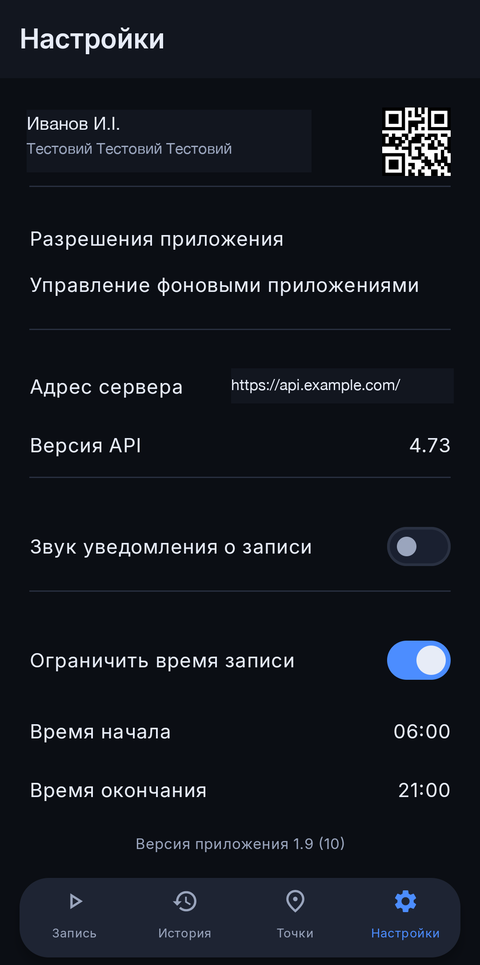
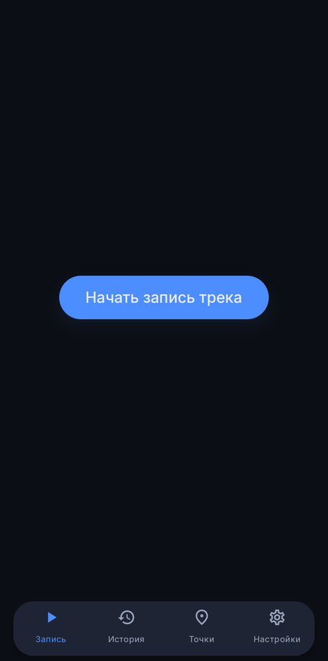
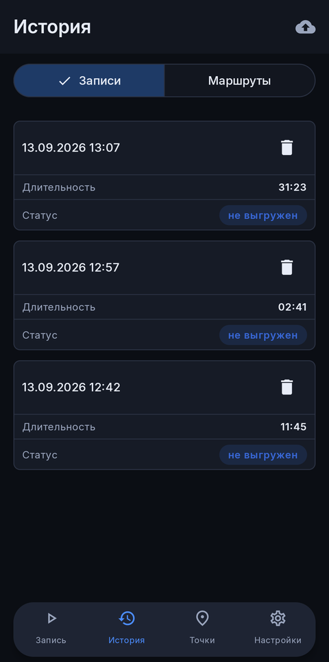
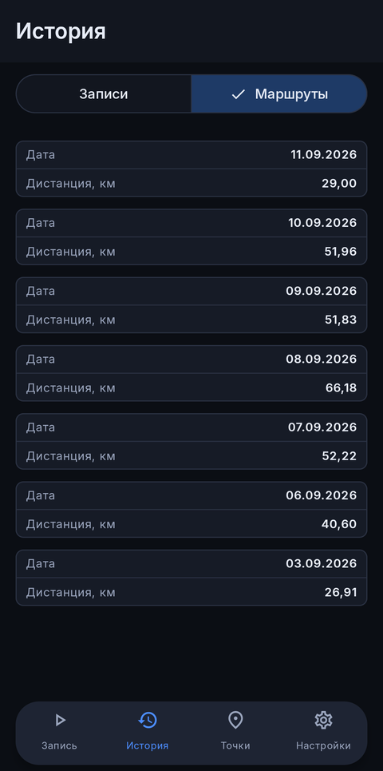
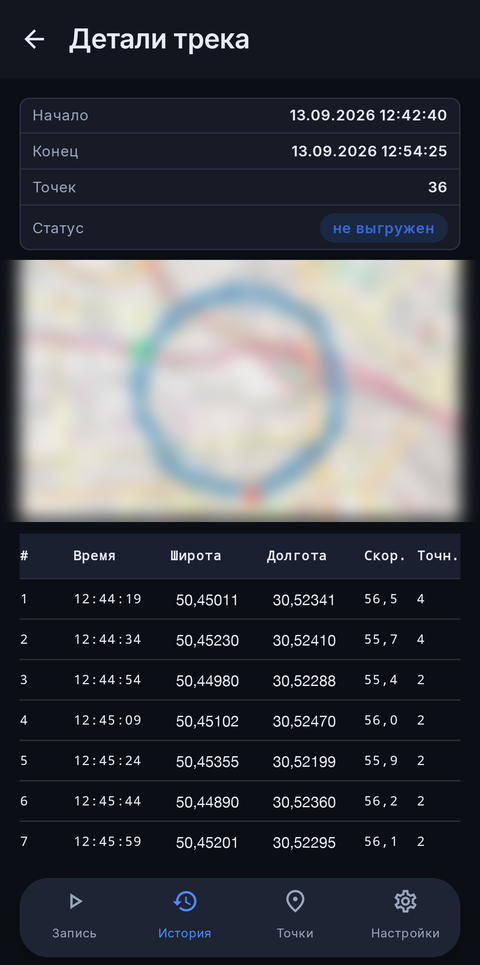
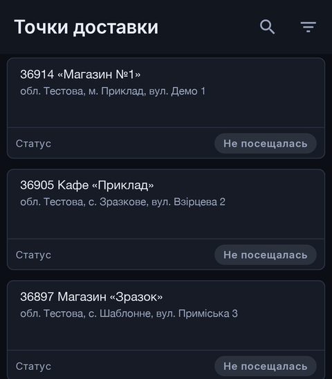
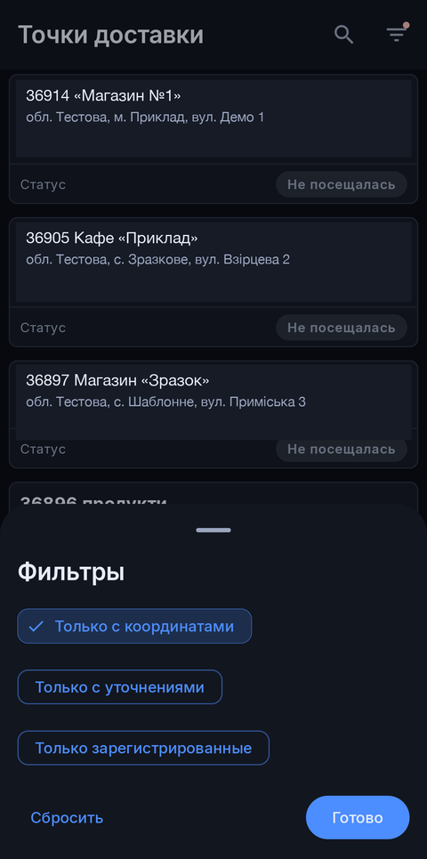

Hermes Tracker has four tabs at the bottom of the screen: Record, History, Points and Settings. This guide walks through each of them.
В нижней части экрана Hermes Tracker расположены четыре вкладки: Запись, История, Точки и Настройки. Это руководство описывает каждую из них.
У нижній частині екрана Hermes Tracker розташовано чотири вкладки: Запис, Історія, Точки та Налаштування. Цей посібник описує кожну з них.
1. Getting Started
1. Начало работы
1. Початок роботи
Permissions
Разрешения
Дозволи
Before you can start recording, the app explains why it needs location access and asks you to confirm. You'll then be asked to grant, in order:
Перед началом записи приложение объясняет, зачем ему нужен доступ к геолокации, и просит подтвердить это. После этого будет предложено предоставить по очереди:
Перед початком запису застосунок пояснює, навіщо йому потрібен доступ до геолокації, і просить підтвердити це. Після цього буде запропоновано надати по черзі:
Location — required to record your route while the app is open.
Background location (Android 10+) — required so recording continues with the screen off or the app minimized.
Notifications (Android 13+) — shows the ongoing recording status.
Геолокация — нужна для записи маршрута, пока приложение открыто.
Фоновая геолокация (Android 10+) — нужна, чтобы запись продолжалась при выключенном экране или свёрнутом приложении.
Уведомления (Android 13+) — показывают текущий статус записи.
Геолокація — потрібна для запису маршруту, поки застосунок відкрито.
Фонова геолокація (Android 10+) — потрібна, щоб запис тривав при вимкненому екрані або згорнутому застосунку.
Сповіщення (Android 13+) — показують поточний статус запису.
You can review or change any of these later in Settings → App permissions. Some phone manufacturers also aggressively stop background apps to save battery — if recording keeps getting interrupted, open Settings → Background app management and allow Hermes Tracker to run unrestricted.
Позже эти разрешения можно проверить или изменить в разделе Настройки → Разрешения приложения. Некоторые производители телефонов агрессивно останавливают фоновые приложения для экономии заряда — если запись постоянно прерывается, откройте Настройки → Управление фоновыми приложениями и разрешите Hermes Tracker работать без ограничений.
Пізніше ці дозволи можна перевірити чи змінити в розділі Налаштування → Дозволи застосунку. Деякі виробники телефонів агресивно зупиняють фонові застосунки для економії заряду — якщо запис постійно переривається, відкрийте Налаштування → Управління фоновими застосунками і дозвольте Hermes Tracker працювати без обмежень.
Registering your device
Регистрация устройства
Реєстрація пристрою
Until the server recognizes your device, the Settings tab shows "Not registered" next to a QR code encoding your device's unique serial number. Give this serial (tap the text to copy it) or show the QR code to your administrator so they can link this device to your agent profile. Once linked, Settings will show your name and role instead.
Пока сервер не распознал ваше устройство, во вкладке Настройки отображается надпись «Не зарегистрировано» рядом с QR-кодом, в котором зашит уникальный серийный номер устройства. Сообщите этот серийный номер (нажмите на текст, чтобы скопировать его) или покажите QR-код администратору, чтобы он привязал это устройство к вашему профилю агента. После привязки в Настройках появятся ваше имя и должность.
Поки сервер не розпізнав ваш пристрій, у вкладці Налаштування відображається напис «Не зареєстровано» поруч із QR-кодом, у якому зашито унікальний серійний номер пристрою. Повідомте цей серійний номер (натисніть на текст, щоб скопіювати його) або покажіть QR-код адміністратору, щоб він прив'язав цей пристрій до вашого профілю агента. Після прив'язки в Налаштуваннях з'являться ваше ім'я та посада.
If you switch to a new phone, or need to re-link an existing agent to this device, tap the scan icon next to your identity card in Settings and scan the QR code your administrator provides — the app looks up and binds that agent profile right away.
Если вы переходите на новый телефон или нужно повторно привязать существующего агента к этому устройству, нажмите значок сканирования рядом с карточкой профиля в Настройках и отсканируйте QR-код, предоставленный администратором — приложение сразу найдёт и привяжет этот профиль агента.
Якщо ви переходите на новий телефон або потрібно повторно прив'язати наявного агента до цього пристрою, натисніть значок сканування поруч із карткою профілю в Налаштуваннях і відскануйте QR-код, наданий адміністратором — застосунок одразу знайде і прив'яже цей профіль агента.

Settings — identity card, QR code and server address (sample data shown)Настройки — карточка профиля, QR-код и адрес сервера (показаны демонстрационные данные)Налаштування — картка профілю, QR-код і адреса сервера (показано демонстраційні дані)
2. Recording a Route
2. Запись маршрута
2. Запис маршруту
On the Record tab, tap Start recording track to begin. A persistent notification and an in-app elapsed-time counter appear while recording is active.
Recording keeps running in the background — with the screen off, the app minimized, or closed from "Recents".
If GPS signal is temporarily lost, the notification switches to an error state ("GPS signal lost") while the app keeps trying to resume recording.
If the app or its recording service is unexpectedly killed by the system, recording automatically resumes when possible.
Recording is only allowed inside a configurable time window (06:00–21:00 by default, see Settings). Outside that window, Start is disabled, and an active recording stops automatically when the window ends.
Tap the stop control to end the recording. You'll be prompted to open History to review and upload it.
На вкладке Запись нажмите «Начать запись трека», чтобы начать. Пока запись активна, отображается постоянное уведомление и счётчик прошедшего времени в приложении.
Запись продолжает работать в фоне — при выключенном экране, свёрнутом приложении или его закрытии из списка «Недавние».
Если сигнал GPS временно потерян, уведомление переключается в состояние ошибки («Сигнал GPS потерян»), а приложение продолжает попытки возобновить запись.
Если система неожиданно завершает приложение или его сервис записи, запись автоматически возобновляется, когда это становится возможно.
Запись разрешена только в пределах настраиваемого временного окна (по умолчанию 06:00–21:00, см. Настройки). Вне этого окна кнопка «Начать» недоступна, а активная запись автоматически останавливается по окончании окна.
Нажмите кнопку остановки, чтобы завершить запись. Приложение предложит перейти в Историю, чтобы проверить и выгрузить трек.
На вкладці Запис натисніть «Почати запис треку», щоб розпочати. Поки запис активний, відображається постійне сповіщення та лічильник часу, що минув, у застосунку.
Запис продовжує працювати у фоні — при вимкненому екрані, згорнутому застосунку чи його закритті зі списку «Останні».
Якщо сигнал GPS тимчасово втрачено, сповіщення перемикається в стан помилки («Сигнал GPS втрачено»), а застосунок продовжує намагатися відновити запис.
Якщо система несподівано завершує застосунок або його сервіс запису, запис автоматично відновлюється, щойно це стає можливим.
Запис дозволено лише в межах налаштовуваного часового вікна (за замовчуванням 06:00–21:00, див. Налаштування). Поза цим вікном кнопка «Почати» недоступна, а активний запис автоматично зупиняється по завершенні вікна.
Натисніть кнопку зупинки, щоб завершити запис. Застосунок запропонує перейти до Історії, щоб перевірити та вивантажити трек.

Record tab, before startingВкладка Запись до начала записиВкладка Запис до початку запису
3. History
3. История
3. Історія
The History tab has two segments: Recordings (tracks stored on this device) and Routes (routes already confirmed by the server, last 10 days).
Вкладка История содержит два раздела: Записи (треки, хранящиеся на этом устройстве) и Маршруты (маршруты, уже подтверждённые сервером, за последние 10 дней).
Вкладка Історія містить два розділи: Записи (треки, що зберігаються на цьому пристрої) і Маршрути (маршрути, вже підтверджені сервером, за останні 10 днів).

Recordings tabВкладка «Записи»Вкладка «Записи»

Routes tabВкладка «Маршруты»Вкладка «Маршрути»
Recordings
Записи
Записи
Each card shows the date, duration, distance, and an upload-status badge: not uploaded, uploading…, uploaded, or upload error.
Swipe a card to reveal a delete action; confirm to permanently remove the recording and all its points.
Tap a card to open its Track Details.
Tracks are uploaded automatically in the background with retries, and are removed from the device the day after a successful upload.
Каждая карточка показывает дату, длительность, дистанцию и бейдж статуса выгрузки: не выгружен, выгружается..., выгружен или ошибка выгрузки.
Смахните карточку, чтобы открыть действие удаления; подтвердите, чтобы навсегда удалить запись и все её точки.
Нажмите на карточку, чтобы открыть Детали трека.
Треки автоматически выгружаются в фоне с повторными попытками и удаляются с устройства на следующий день после успешной выгрузки.
Кожна картка показує дату, тривалість, дистанцію та бейдж статусу вивантаження: не вивантажено, вивантажується..., вивантажено або помилка вивантаження.
Змахніть картку, щоб відкрити дію видалення; підтвердіть, щоб назавжди видалити запис і всі його точки.
Натисніть на картку, щоб відкрити Деталі треку.
Треки автоматично вивантажуються у фоні з повторними спробами та видаляються з пристрою наступного дня після успішного вивантаження.
Routes
Маршруты
Маршрути
Pull down to refresh and see routes confirmed by the server over the last 10 days.
Tap a route card to open its Track Details.
Потяните вниз, чтобы обновить список маршрутов, подтверждённых сервером за последние 10 дней.
Нажмите на карточку маршрута, чтобы открыть его Детали трека.
Потягніть вниз, щоб оновити список маршрутів, підтверджених сервером за останні 10 днів.
Натисніть на картку маршруту, щоб відкрити його Деталі треку.
Track Details
Детали трека
Деталі треку
The back button in the top bar returns to History.
An info card summarizes the start time, end time, duration, point count, and upload status.
Below it, a map shows the recorded path (OpenStreetMap tiles), followed by a full table of points (time, coordinates, speed, accuracy) — very long tracks hide some middle rows to keep the screen responsive, shown as "… N points hidden …".
Кнопка «Назад» в верхней панели возвращает в Историю.
Карточка сведений показывает время начала, время окончания, длительность, количество точек и статус выгрузки.
Ниже расположена карта с записанным маршрутом (тайлы OpenStreetMap), а под ней — полная таблица точек (время, координаты, скорость, точность); в очень длинных треках часть строк в середине скрывается для скорости работы экрана и обозначается как «… скрыто N точек …».
Кнопка «Назад» у верхній панелі повертає до Історії.
Картка відомостей показує час початку, час завершення, тривалість, кількість точок і статус вивантаження.
Нижче розташована карта із записаним маршрутом (тайли OpenStreetMap), а під нею — повна таблиця точок (час, координати, швидкість, точність); у дуже довгих треках частину рядків посередині приховано для швидкодії екрана, позначено як «… приховано N точок …».

Track Details — map is blurred and coordinates replaced with sample values for privacyДетали трека — карта размыта, а координаты заменены на демонстрационные значенияДеталі треку — карту розмито, а координати замінено на демонстраційні значення
4. Delivery Points
4. Точки доставки
4. Точки доставки
The Points tab lists delivery points synced from the server and cached on the device, refreshed automatically whenever the data actually changes.
Вкладка Точки показывает список точек доставки, синхронизированных с сервера и кэшированных на устройстве; список автоматически обновляется при реальном изменении данных.
Вкладка Точки показує список точок доставки, синхронізованих із сервера та кешованих на пристрої; список автоматично оновлюється за реальної зміни даних.

Points list — names and addresses are sample dataСписок точек — названия и адреса демонстрационныеСписок точок — назви та адреси демонстраційні
Finding a point
Поиск точки
Пошук точки
Tap the search icon and type a code, address, name, or linked client to filter the list as you type.
Tap Filters to combine: with coordinates, with clarification, registered (today). Reset clears them; Done applies and closes the sheet.
Нажмите значок поиска и введите код, адрес, название или связанного клиента — список фильтруется по мере ввода.
Нажмите «Фильтры», чтобы скомбинировать: только с координатами, только с уточнениями, только зарегистрированные (сегодня). «Сбросить» очищает фильтры; «Готово» применяет их и закрывает лист.
Натисніть значок пошуку і введіть код, адресу, назву або пов'язаного клієнта — список фільтрується під час введення.
Натисніть «Фільтри», щоб скомбінувати: лише з координатами, лише з уточненнями, лише зареєстровані (сьогодні). «Скинути» очищає фільтри; «Готово» застосовує їх і закриває лист.

Filters bottom sheetЛист фильтровЛист фільтрів
Status badges
Бейджи статуса
Бейджі статусу
Registered — checked in today, within the allowed distance from the point.
Registered (far) — checked in today, but farther than the distance threshold; recorded together with a warning.
Not visited — no check-in recorded for today yet.
A yellow warning icon on a card means the point has no coordinates yet — this is a heads-up, not an error, and it will disappear once the position is clarified.
Зарегистрировано — чек-ин сегодня выполнен в пределах допустимого расстояния до точки.
Зарегистрировано (далеко) — чек-ин сегодня выполнен, но с превышением порога расстояния; зафиксирован вместе с предупреждением.
Не посещалась — сегодня чек-ин ещё не выполнялся.
Жёлтый значок предупреждения на карточке означает, что у точки пока нет координат — это предупреждение, а не ошибка, и оно исчезнет после уточнения позиции.
Зареєстровано — чек-ін сьогодні виконано в межах допустимої відстані до точки.
Зареєстровано (далеко) — чек-ін сьогодні виконано, але з перевищенням порогу відстані; зафіксовано разом із попередженням.
Не відвідувалась — сьогодні чек-ін ще не виконувався.
Жовтий значок попередження на картці означає, що в точки поки немає координат — це попередження, а не помилка, і воно зникне після уточнення позиції.
Opening a point on the map
Открытие точки на карте
Відкриття точки на карті
Tap anywhere on a point's card to open it in Google Maps, with a fallback to the system map handler — this only works if the point already has coordinates. Swiping a card reveals the same shortcut as a Map button, alongside Clarify and Check-in.
Нажмите в любом месте карточки точки, чтобы открыть её в Google Maps с фоллбеком на системный обработчик карт — это работает только если у точки уже есть координаты. Свайп карточки открывает тот же переход в виде кнопки «Карта», рядом с кнопками «Позиция» (уточнение) и «Регистрация».
Натисніть у будь-якому місці картки точки, щоб відкрити її в Google Maps із фолбеком на системний обробник карт — це працює лише якщо в точки вже є координати. Свайп картки відкриває той самий перехід у вигляді кнопки «Карта», поруч із кнопками «Позиція» (уточнення) та «Реєстрація».
Swipe a point's card and tap Check-in to register your visit. Your GPS distance to the point is checked against a threshold (150 m by default); if you're farther away, a confirmation dialog warns you and lets you check in anyway, marked as "far".
Смахните карточку точки и нажмите «Регистрация», чтобы зарегистрировать визит. Расстояние по GPS до точки сравнивается с порогом (по умолчанию 150 м); если вы дальше, появится диалог с предупреждением, где можно всё равно подтвердить регистрацию — она будет отмечена как «далеко».
Змахніть картку точки і натисніть «Реєстрація», щоб зареєструвати візит. Відстань за GPS до точки порівнюється з порогом (за замовчуванням 150 м); якщо ви далі, з'явиться діалог із попередженням, де можна все одно підтвердити реєстрацію — її буде позначено як «далеко».
Clarifying a point's position
Уточнение позиции точки
Уточнення позиції точки
If a point has no coordinates yet, swipe its card and tap Clarify to save your current GPS position as the point's location. The app only accepts a position it can actually verify falls inside Ukraine's borders — if GPS is unavailable, disabled, or the signal can't be trusted, clarification is refused with "Could not get your location. Try again." rather than silently accepting an unverifiable position.
Если у точки ещё нет координат, смахните карточку и нажмите «Позиция», чтобы сохранить вашу текущую GPS-позицию как местоположение точки. Приложение принимает только позицию, которую оно может реально проверить на попадание в границы Украины — если GPS недоступен, отключён или сигналу нельзя доверять, уточнение отклоняется с сообщением «Не удалось получить вашу позицию. Попробуйте снова.» вместо того, чтобы молча принять непроверенную позицию.
Якщо в точки ще немає координат, змахніть картку і натисніть «Позиція», щоб зберегти вашу поточну GPS-позицію як місцезнаходження точки. Застосунок приймає лише позицію, яку він реально може перевірити на входження в межі України — якщо GPS недоступний, вимкнений або сигналу не можна довіряти, уточнення відхиляється з повідомленням «Не вдалося отримати вашу позицію. Спробуйте знову.» замість того, щоб мовчки прийняти неперевірену позицію.
5. Settings
5. Настройки
5. Налаштування
Identity card & QR — your agent name/role once registered, or your device's serial QR while not (see Getting Started).
App permissions — jumps to the system permissions screen for this app.
Background app management — opens the manufacturer's battery/background settings, useful if recording keeps getting interrupted.
Server address — the API endpoint the app talks to; editable for pointing at a test/staging server. Shows the connected API version.
Recording notification sound — turns the recording notification's sound on or off.
Limit recording time — enables the recording window and lets you set its start and end time.
Dark theme — switches instantly across the whole app.
Allow screen rotation — lets screens rotate with the device instead of staying portrait-locked.
App version — shown at the bottom of the screen; include it when reporting a problem.
Карточка профиля и QR — имя и должность агента после регистрации или QR-код с серийным номером устройства, пока регистрации нет (см. раздел «Начало работы»).
Разрешения приложения — переход к системному экрану разрешений для этого приложения.
Управление фоновыми приложениями — открывает настройки батареи/фона производителя устройства; полезно, если запись постоянно прерывается.
Адрес сервера — API-адрес, с которым работает приложение; можно изменить, чтобы направить приложение на тестовый сервер. Показывает подключённую версию API.
Звук уведомления о записи — включает или отключает звук уведомления о записи.
Ограничить время записи — включает окно времени записи и позволяет задать его начало и конец.
Тёмная тема — переключается мгновенно во всём приложении.
Разрешить поворот экрана — позволяет экранам поворачиваться вместе с устройством вместо фиксированного портретного положения.
Версия приложения — отображается внизу экрана; указывайте её при сообщении о проблеме.
Картка профілю та QR — ім'я та посада агента після реєстрації або QR-код із серійним номером пристрою, поки реєстрації немає (див. розділ «Початок роботи»).
Дозволи застосунку — перехід до системного екрана дозволів для цього застосунку.
Управління фоновими застосунками — відкриває налаштування батареї/фону виробника пристрою; корисно, якщо запис постійно переривається.
Адреса сервера — API-адреса, з якою працює застосунок; можна змінити, щоб спрямувати застосунок на тестовий сервер. Показує підключену версію API.
Звук сповіщення про запис — вмикає або вимикає звук сповіщення про запис.
Обмежити час запису — вмикає часове вікно запису та дозволяє задати його початок і кінець.
Темна тема — перемикається миттєво в усьому застосунку.
Дозволити поворот екрана — дозволяє екранам повертатися разом із пристроєм замість фіксованого портретного положення.
Версія застосунку — відображається внизу екрана; вказуйте її, повідомляючи про проблему.
Need more help?
Нужна дополнительная помощь?
Потрібна додаткова допомога?
Something isn't covered here, or not working as expected? Contact d.gordienko@gmail.com. For questions about data collection, see the Privacy Policy.